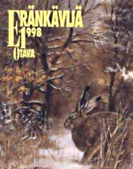

KIRJAT JA JULKAISUTOPPIMATERIAALIA NETISSÄ VUODESTA 1999 LÄHTIENPSYKOLOGIAN PIKALINKIT PSYKAN VIDEOABIKURSSIT: PSYKOLOGIAN MAAILMA -VIDEOKERTAUSKURSSI ABEILLE (vlogi) - UUSI OPS!! PS7 ABI KERTAUSKURSSI (opetustilanne) - VANHA OPS (OPS 2016-): PS1 Psyykkinen toiminta ja oppiminen PS2 Kehittyvä ihminen PS3 Tietoa käsittelevä ihminen PS4 Tunteet, psyykkinen hyvinvointi ja mielenterveys PS5 Yksilöllinen ja yhteisöllinen ihminen Rukoileva opetuslapsi Kohtaamisia - suomalainen usko Suomalainen usko Kohtaamisia - Opettajan opas Eränkävijä 1998 Kairassa sattuu aina Eränkävijä 2001 |
Kuninkaiden kohtaaminen(Eränkävijä 1998)
Keväällä 1998 osallistuin kokeilumielellä ensimmäistä kertaa valtakunnalliseen kirjoituskilpailuun. Metsästys ja Kalastus -lehden sekä Eränkävijän vuotuinen eräkirjoittajakilpailu oli harrastuksiini soveltuvin. Novellini Kuninkaiden kohtaaminen voitti kirjoituskilpailun kalastusaiheisen sarjan 1. palkinnon. Voitto on arvostettu eräkirjoittajien keskuudessa. Juttelin joulukuussa 1997 edesmenneen kirjailija ja perhokalastaja Harri Sirolan kanssa ja hän sai minut osallistumaan kilpailuun. Harrin kirjailijauran ponnahduslautana oli toiminut juuri tämän Eränkävijän kirjoituskilvan voitto vuonna 1992 novelilla Tyttö ja virta.
Kuninkaiden kohtaaminen kertoo vanhan miehen viimeisestä kalareissusta Saarijärven Riekonkoskelle ja siitä, kuinka kaksi kuningasta, vanha kokenut kalastaja ja vanha kokenut taimen, kohtaavat. Raati arvosti yleiseen aiheeseen saatua tuoreutta ja tunnelmaa ja piti kirjoitusta ensimmäisen palkinnon arvoisena. Kansi: Seppo Polameri Otava, Keuruu 1998. Kirjoitukseni on sivuilla 87-92 Seppo Polameren kuvittamana. ISSN 1235-2357 ISBN 951-1-15635-7 |